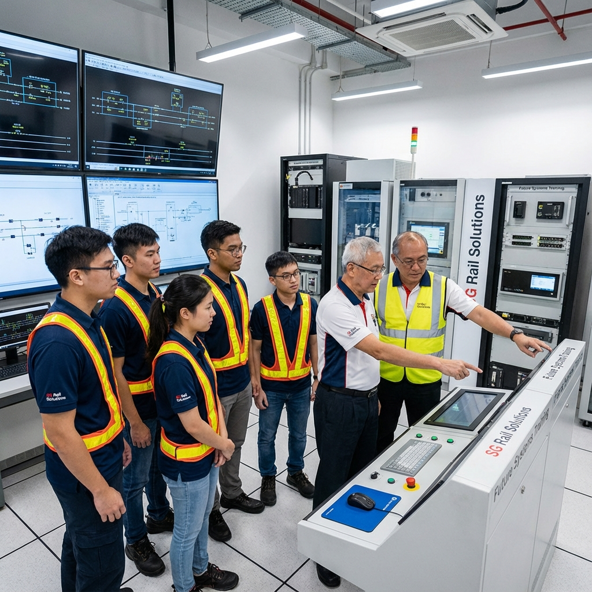
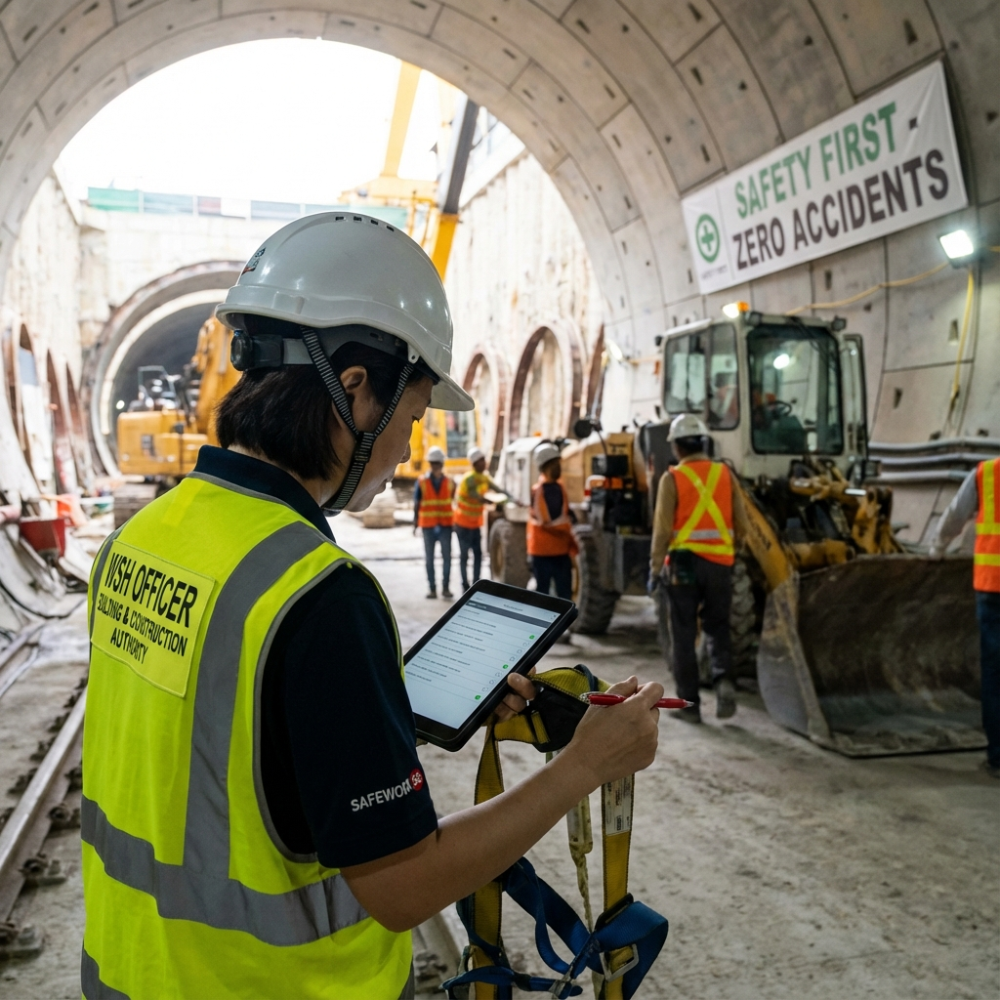

Loading
Loading
Supporting the LTA mandate for localized engineering expertise in Rolling Stock, Signalling, and P-Way.
Moving from OEM-reliance to local mastery. We supply the technical talent that keeps Singapore's rail network moving.
In the past, diagnosing complex faults meant relying on OEMs from Europe or Japan. Today, major operators like SMRT and SBS Transit are aggressively pursuing "localised support arrangements".
RNS Technology SG is aligned with this national agenda. We don't just supply "technicians"; we supply specialists capable of deep diagnostics, component-level repair, and safety-critical maintenance.

First line of defense for EMUs and Locomotives.
The "Brain" of the railway network.
Ensuring geometric integrity of the track.
Comprehensive safety management solutions for high-risk environments.

We supply qualified safety professionals to ensure your project meets all MOM regulations and BizSAFE standards.